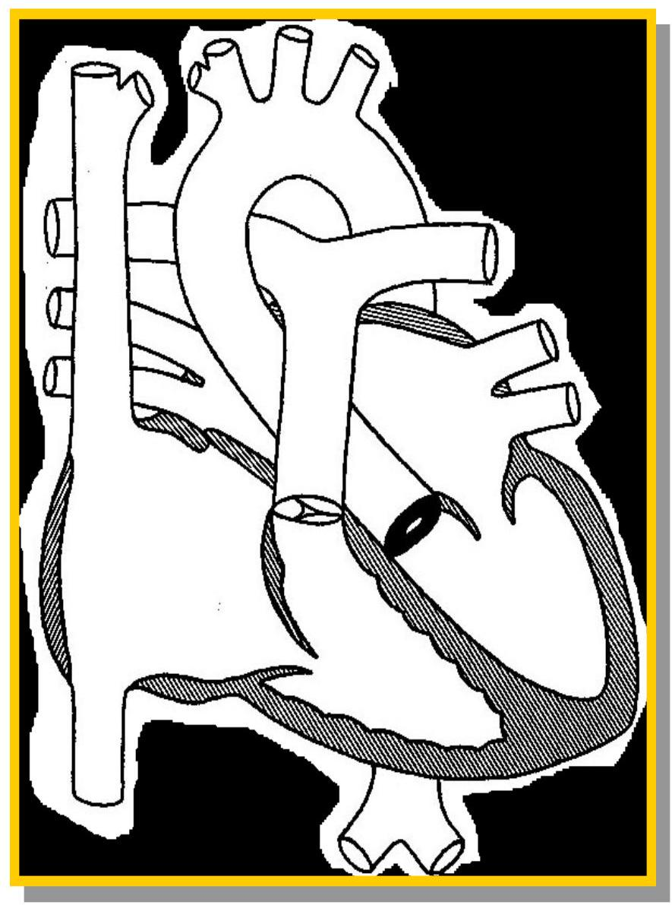

Congenital Heart Disease
Dr B. Ombaba Osano Paediatrics & Child Health
CHS - UoN
Just an introduction
- Best to get full details for each condition from the textbooks
CHD and embryology
- Understand Heart embryology as the basis for Congenital Heart disease
Heart Lung relations
Heart Embryology at a Glance
| Weeks | Days | Cardiac Events |
|---|---|---|
| 1-2 | 0-20 | No heart or great vessels |
| 3 | 20 | Cardiogenic plate |
| 3 | 21 | Endocardial tubes |
| 4 | 22 | Fusion of endocardial tubes |
| 4 | 23 | Single median cardiac tube,first contraction ( ineffective) |
| 4 | 25 | Cardiogenic loop |
| 4 | 26 | Single atrium |
| 5 | 29 | Bi-lobed atrium |
| 5 | 30 | Beginning of circulation |
| 5 | 31 | Septum primum |
| 5 | 35 | A-V orifice, 3 chamber heart |
| 6 | 36 | Septum secundum |
| 6 | 39 | Complete inferior septum |
| 6 | 40 | Septation of bulbus and ventricle |
| 6 | 42 | Divided truncus arteriosus |
| 7 | 49 | 4-chambered heart, Absorption of pulmonary veins |
Early Heart Tube Differentiation
fusing endothelial truncus
Cardiac Looping
modified from Bernstein (1996) and other sources
CHD: Pathophysiology
- Left to right shunts
- Oxygenated blood recirculates in lungs
- Right to left shunts
- Desaturated blood bypasses lungs
- Transposition
- Circulations in parallel
- Obstruction
- Increased workload on cardiac chamber
ASD (Atrial Septal Defect)
- Failure of complete closure of the interatrial septum
Types of Atrial Septal Defects
- Patent foramen ovale
- Secundum ASD
- Primum ASD
- Sinus Venosus ASD
- Coronary Sinus ASD
- Common atrium
Atrial Septal Defect - physiology
What causes the murmur?
ASD - Clinical Findings
- Usually asymptomatic
- Fixed widely split S2
- Systolic Ejection murmur at LUSB, radiates to lung fields
- Soft diastolic murmur at LLSB
- Precordial bulge and RV heave
- Prolonged P-R interval and IRBBB
Natural history and complications
- Spontaneous closure
- Diameter <3-5 mm
- Patent
- Arrhythmia -atrial Fib
- Heart failure
- Pulmonary hypertension
- Paradoxical emboli
- Mitral valve prolapse
ASD treatment
- Surgical closure
- By device in the cath-lab

Ventricular Septal Defect (VSD)
VSD Physiology
- Physiology is determined by size of VSD
- Small to medium size defects are pressure limiting or "restrictive"
- Large defects provide no resistance to flow between the ventricles - "non-restrictive"
- In large VSDs the flow across the defect is determined by the relative resistance in pulmonary and systemic vascular beds
- Patients with large VSD have pulmonary arterial hypertension
- If low PVR, lots of flow, lots of symptoms
- If high PVR, less flow, may be asymptomatic
Clinical picture VSD
- Congestive heart failure
- Symptoms
- Sweat during feeds
- Difficulty in feeding
- Inadequate weight gain
- 2-3 weeks
- Tachypnea
- Tachycardia
- Mottled skin
- Cold periphery
- Enlarged liver
VSD COURSE
- Congestive heart failure
- Pulmonary hypertension
- Large VSD but balanced heart failure
- Spontaneous closure
- Develop RV outflow obstruction
- Aortic insufficiency
- Endocarditis
VSD - management
- Unrepaired VSDs do NOT need SBE prophylaxis
- Practice good oral hygiene!
- Symptomatic defects - medical first
- Diuretics, ACEI, nutrition, time
- Perimembranous and muscular defects may have spontaneous closure
- Indications for interventions:
- Failure of medical management
- Aortic insufficiency
- Qp/Qs > 2:1, volume load in older children
- Pulmonary Hypertension - repair before 1 year of age
- Eisenmenger's - inoperable
VSD definitive management
- Catheterization
- device closure
- Surgery - closure
COARCTATION OF THE AORTA
- Congenital narrowing of the aorta
- Most typically at the isthmus
- Discrete shelf or longer segment narrowing

Coarctation - associated lesions
- 85% have associated Bicuspid Ao Valve
- "Simple coarctation"
- In older patients, usually
- In infants, half are "simple"
- "Complex coarctation" - associated with other intra-cardiac lesions
- VSD
- Valvular/sub-valvular Ao Stenosis
- Shone's complex
- TGA with VSD
- ASD
- Single ventricle
Coarctation Variations
Hemodynamics
- Low flow to kidneys activates renin-angiotensin system resulting in high BP above the obstruction and normalized BP below
Collaterals often develop
Newborn presentation
- Dyspnea, poor feeding, diaphoresis, pallor, tachycardia, poor pulses, murmur, usually within first 2 weeks of life
- Upon ductal closure,
- Obstruction in descending aorta develops rapidly with no time to develop hypertrophy
- Systolic dysfunction, poor CO
- Increased EDP
- increased LA pressure,
- pulmonary venous congestion
- Congestive heart failure with acidosis, shock
- Associated lesions compound the burden (aortic stenosis, VSD, etc)
- Rx: Prostaglandin E1, stabilize, surgery
Coarctation late presentation
- Late presentation (older child or adult)
- Referred for murmur, high BP or Turner's
- Asymptomatic (rarely headache or claudication)
- Decreased, delayed pulses in lower extremities
- 3-4% have anomalous R subclavian artery (ARSA)
- Arises distal to coarctation so remember to check pulses in all 4 extremities
- Compare right and left
- Systolic BP difference in upper and lower extreme
- measure supine with correct cuff size
- Gradient may be mild ( <20 mmHg ) or severe (as high as 80 mmHg )
Presentation in older child/adult continued
- Prominent impulse at apex
- Thrill
- Normal S1 and S2, ejection click (if BAV)
- 2-3/6 SEM at LUSB radiates to Left scapula
- Continuous murmurs throughout chest from collaterals
- Systolic BP difference in upper and lower extremities (measure supine with correct cuff size)
Treatment
- Surgery - various techniques
- For all newborns
- Some older patients
- Requires cross clamping aorta with risk of spinal ischemia
- Risk increases if poorly developed collateral circulation
- Primary balloon angioplasty
- Procedure of choice for re-stenosis after surgery
- For selected children with discrete shelf - controversial
- Risk of dissection, late aneurysm formation
- Considered palliative only in small neonates
- Percutaneous stent
- For fully grown patients
- Reduces risk of aneurysm
- Suitable for long segment stenosis
Endovascular stent for coarctation
Figure 1. Descending aorta angiogram in the frontal projection in a 26 -year-old female patient (weight = 77 kg) with severe coarctation of the aorta, with a peak gradient of 35 mmHg . (A) Angiogram using a Multitrack catheter demonstrating tight coarctation (arrow) with a diameter <1.5 mm . (B) Repeat angiogram after deployment of a 34 mm Cheatham Platinum stent mounted over a BIB catheter (inner balloon diameter 6 mm and outer balloon diameter of 12 mm ), demonstrating a good result (arrow). (C) Final angiogram after further expansion with a 18 mm ZMED balloon demonstrating further expansion of the stent to a diameter of 14 mm and a gradient reduction to zero.
Serially expanded up to 14 mm diameter with reduction in gradient to zero
Patent Ductus Arteriosus (Friend or Foe?)
Magnitude of shunt depends on
- Pressure gradient
- Ao and PA
- Resistance within PDA
PDA pathophysiology
- Pulmonary over-circulation
- Decreased lung compliance (increased WOB)
- Increased pulmonary venous return to LA
- Left heart enlargement
- Diastolic run-off in aorta with low diastolic BP
- Eventual pulmonary vascular disease (Eisenmenger's)
- May present with murmur, CHF, A. fib, endocarditis, or as an incidental finding
- Rarely there is an aneurysm of the ductus which may rupture or impinge on recurrent laryngeal nerve
PDA and Recurrent Laryngeal Nerve
Large PDA
- $\text{PVR} < \text{SVR}$
- But pressures may be equal if ductus is large enough
- "Non restrictive"
- Signs of CHF
- FTT, poor feeding, resp distress, fatigue in older child
- Palpation
- Dynamic LV impulse and thrill
- Bounding pulses with wide pulse pressure
- loud continuous murmur "Machinery" at LUSB or L infraclavicular area
- (Apical diastolic rumble)
PDA Treatment
- Medical management of Heart failure
- diuretics, afterload reduction, nutrition
- Surgical Ligation (standard or thoracoscopic)
- symptomatic infants
- older patients who are not candidates for transcatheter based therapy
- Catheterization
- Coil occlusion,
- Amplatzer device
- Other devices
- Pulm vasodilators for pts with Eisenmenger's
When the ductus is your friend
Ductal Dependent Lesions (In CHD)
- Right heart obstruction
- Need PDA for pulmonary blood flow
- Critical PS, TOF, PA, TA
- Left heart obstruction
- Need PDA for systemic blood flow
- Critical AS, CoArc, HLHS, IAA
- PDA needed for mixing
- dTGA
Atrioventricular Canal Development
Complete AV Canal
Associated with:
- Trisomy 21
Valve Stenosis
Anatomy
Obstructive physiology
- Numerous levels of obstruction
- Valve (90%)
- Subvalve
- Supravalve
Clinical manifestations - General
- Variable presentation Asymptomatic CHF/Cyanotic
- Murmur
- Systolic, crescendo-decrescendo
- Localized to valve
- Radiates with flow of blood (.wav)
- Click
Cyanotic Heart diseases
Reasons for central cyanosis
- Right to left shunting in the heart
- Right to left shunting in the lungs
- Methemoglobinemia
Hyperoxic test
- Empiric
- Administration of $100\% \mathrm{O}_{2}$ for 10 minutes
- Blood gas $\mathrm{PO}_{2}$
| State | Saturation | $\mathrm{PaO}_{2}$ after $\mathbf{10}$ mins of $\mathbf{100\%} \mathbf{O}_{2}$ |
|---|---|---|
| Normal | 90-100 | 400-500 |
| Cy. HD | <80 | <150 |
| Mixed | <100 | <250 |
| Respiratory | >80 | >150 |
Intracardiac Rt. To Lt. shunting
- Parallel circulations
- Transposition of the great vessels
- Reduced pulmonary blood flow
- Tetralogy of Fallot
- Pulmonary Atresia
- Complete mixing normal or increased pulmonary blood flow
- Single ventricle
Tetralogy of Fallot
- VSD
- large, unrestrictive
- malalignment type
- Overriding Aorta
- Pulmonary Stenosis
- infundibular
- valvular
- hypoplasia of PAs
- RVH
Anterior deviation of the infundibular septum
Physiology
- VSD is non-restrictive
- direction and magnitude of shunt depends on severity of RVOT obstruction
- Severe RVOTO: more R to L shunt
- Mild RVOT: less R to L shunt
- RVOT obstruction may be dynamic
- "Pink Tet" if RVOT obstruction is minimal, net L to R shunt, behave like a large VSD
Clinical Presentation
- Newborn presents with murmur or cyanosis
- $\mathrm{O}_{2}$ Sat gradually declines over time
- Hypercyanotic Spells
- acute onset of intense cyanosis with hyperpnea due to spasm of the infundibulum
- Decreased PBF, severe hypoxemia, altered level of consciousness, very high mortality
- Rx: Calm, $\mathrm{O}_{2}$, knee chest, phenylepherine, surgery, bblocker
- ECG - RVH, RAD (RBBB after repair)
- S&S: Squatting, clubbing (unrepaired), cyanosis
CXR in TOF
- heart size small or normal
- upturned apex
- concave LUSB
- "boot shaped"
- Right Aortic Arch 25%
- normal or decreased vascular markings
Figure 2.9 Chest x-ray of a newborn with TOR: The pulmonary vascular markings are not decreased, reflecting adequate pulmonary blood flow. A normal-sized "boot-shaped" heart is apparent.
"Tet Spells"
Treatment for Tet Spells:
- Avoid agitation
- Knee chest
- Volume
- Sedation (morphine/ketamine)
- Propranolol
- Phenelyepherine
- Emergency surgery
TGA (Transposition of the Great Arteries)
- Normal "dextro" looping of ventricles abnormal rotation of the great arteries
- Atrio-ventricular concordance with ventriculo-arterial discordance
- Pulmonary arises from left ventricle
- Aorta arises from right ventricle
- Simple dTGA
- Complex dTGA - associated lesions
- VSD
- ASD
- PDA
- Valve stenosis
- Coronary anomalies frequent
TGA Presents at birth with severe cyanosis
Mixing occurs at ASD/PFO, PDA and VSD, if present
Immediate stabilization:
- Start PGE1 (since the 1980's)
- Balloon Atrial Septostomy
Truncus Arteriosus
Anatomy
Left to right shunt
- Single arterial trunk supplies pulmonary and systemic circulation
- Ventricular septal defect
Univentricular Hearts "single ventricles"
P113720-008-0 CA-1620898F-08
Tricuspid Atresia & Hypoplastic Left Heart
Tricuspid Atresia
Hypoplastic left heart
Total Anomalous pulmonary venous Connections (TAPVC) or Return (TAPVR)
Pulmonary Venous Anomalies
- Total Anomalous pulmonary venous Connections (TAPVC)
- Failure of normal connection between pulmonary venous plexus AND CPV before splanchnic venous system have regressed.
- Type I: Supracardiac (47%)
- Type II: Cardiac (16%)
- Type III: Infradiaphragmatic (13-23%)
- Type IV: Mixed( (7-10%)
Supra Cardiac TAPVC
Infra Cardiac TAPVC
Pulmonary Venous Anomalies Pathophysiology
- Dependent on Anatomy, mixing and obstruction
- Obstruction:
- Pulmonary edema,
- Reflex vasoconstriction,
- Vascular remodeling,
- RV changes and failure